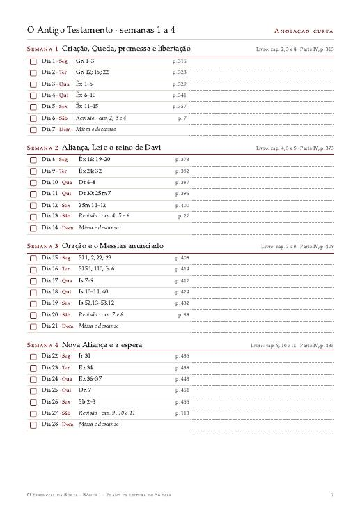
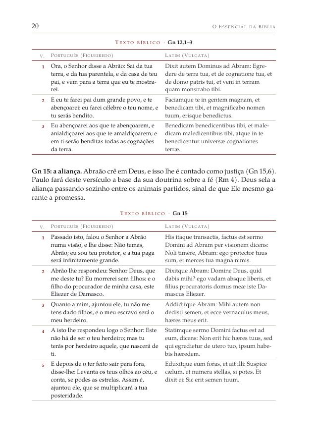
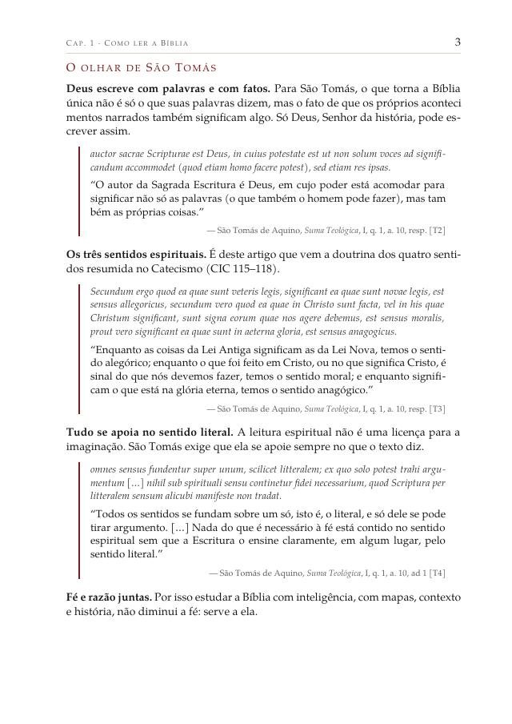
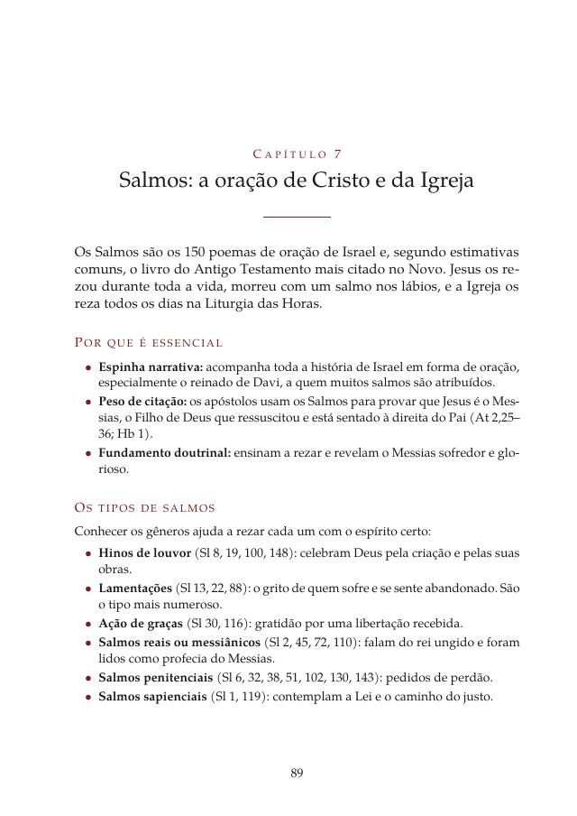
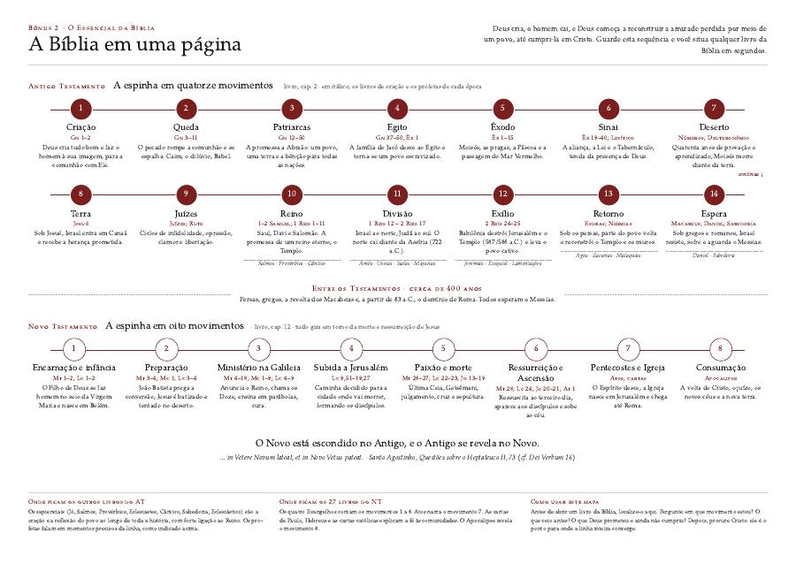
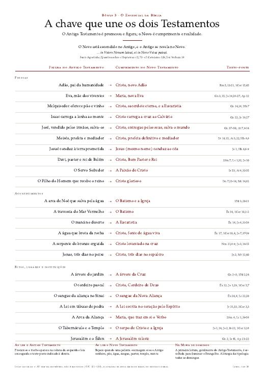
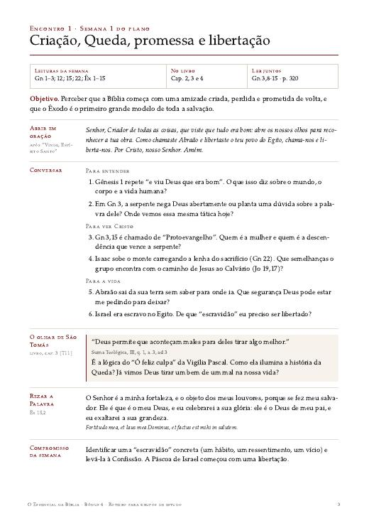

Bônus 1 · contra o “vou me perder”
Plano de leitura de 56 dias
Cada dia com a leitura, a página do livro onde está o texto e uma caixinha para marcar. Inclui o método diário e um caderno semanal de anotações para imprimir.
Com o Método 80/20, em 8 semanas e 20 a 30 minutos por dia, você entende a história inteira das Escrituras, do Gênesis ao Apocalipse. O texto vem em português e latim, verso a verso, com São Tomás de Aquino como guia.
Quase sempre começa do mesmo jeito. Num retiro, numa Quaresma ou num começo de ano, você decide: agora eu vou ler a Bíblia. Abre no Gênesis, e os primeiros capítulos são lindos. A criação, Adão e Eva, Noé, Abraão.
O Êxodo prende ainda mais: as pragas, a Páscoa, o Mar Vermelho se abrindo. Então chega o Levítico. Sacrifícios, leis de pureza, medidas do Tabernáculo. Você lê sem entender por que aquilo está ali, pula alguns capítulos, volta.
Um dia, esquece de ler. No outro também. A Bíblia volta para a estante, e fica a sensação de que ela não foi feita para você.
Talvez você se reconheça também nestes outros sinais:
Não é falta de fé nem de inteligência. É falta de mapa. A Bíblia é uma biblioteca de 73 livros, escrita ao longo de mais de mil anos, e ninguém aprende uma biblioteca começando pela primeira prateleira.
O economista Vilfredo Pareto observou que poucas causas costumam produzir a maior parte dos efeitos. Na Bíblia acontece algo parecido: alguns livros funcionam como vigas mestras. Se forem retirados, a casa cai. Os outros só fazem sentido quando a estrutura já está de pé.
O Método 80/20 identifica essas vigas e mostra como elas se ligam. Você ganha o mapa antes de percorrer o território. Depois, qualquer outro livro da Bíblia encontra o seu lugar.
Espinha narrativa. O texto sustenta o enredo da salvação? Sem ele, a história fica com um buraco que nenhum outro livro preenche?
Peso de citação. O texto é citado com frequência pelo próprio Novo Testamento, pela liturgia e pelo Catecismo?
Fundamento doutrinal. Dele nascem verdades centrais da fé: criação, pecado original, aliança, encarnação, redenção, Igreja, sacramentos, ressurreição?
Um livro que passa pelos três filtros entra na lista. Um livro que passa por dois é considerado caso a caso. A leitura segue a regra da Igreja: unidade da Escritura, Tradição viva e analogia da fé.
Você não precisa abrir outra Bíblia. O texto português é a tradução clássica do Pe. Antônio Pereira de Figueiredo, com a ortografia atualizada, lado a lado com a Vulgata latina, da qual ele traduziu. Em cada capítulo, São Tomás de Aquino aparece no original latino e em português.



A espinha narrativa em quatorze movimentos. Gênesis, Êxodo, Deuteronômio, Samuel, Salmos, Isaías, Jeremias, Ezequiel, Daniel e Sabedoria, e os sete temas que carregam o AT.
O mundo que esperava o Messias e os oito movimentos do NT. Mateus, Lucas, João, Atos, Romanos, Coríntios, Filipenses, Hebreus e Apocalipse.
A tabela que une os dois Testamentos, o plano de oito semanas com o método de cada dia e a conclusão: o essencial em uma página.
Todos os textos das oito semanas, em português e latim. A Semana 5 traz o Evangelho de Lucas inteiro. Mais dois índices: passagens-chave e citações de São Tomás.
Cinco dias de leitura por semana, um de revisão e o domingo para a Missa. As quatro primeiras semanas percorrem o Antigo Testamento; as quatro últimas, o Novo.

Cada dia com a leitura, a página do livro onde está o texto e uma caixinha para marcar. Inclui o método diário e um caderno semanal de anotações para imprimir.

Os 14 movimentos do Antigo Testamento e os 8 do Novo numa linha do tempo, com os profetas de cada época. Formato A3, para pendurar ao lado da mesa de estudo.

Os 23 pares de figura e cumprimento, de Adão e Cristo à Jerusalém celeste, cada um com o texto que liga os dois. Pôster A3.

Oito encontros prontos para paróquia, grupo de oração, catequese ou família: oração de abertura, perguntas para conversar, São Tomás, a Palavra para rezar e um compromisso por semana.
Você economiza R$ 151 sobre o valor somado. Isso dá menos de R$ 0,84 por dia de leitura do plano. Quando o contador zerar, o preço volta para R$ 97, no dia 4 de novembro, às 23h59.
Quero o livro e os 4 bônus · R$ 47Leia, siga o plano das semanas 1 e 2 e use os bônus. Se você não sentir que entende a Bíblia melhor do que antes, peça o reembolso em até 30 dias e devolvemos 100% do valor. Basta uma mensagem. O risco fica todo do nosso lado.
“A palavra da Sagrada Escritura ensina com firmeza, pela sua verdade eterna; deleita com suavidade, pela sua utilidade; move com eficácia, pela sua autoridade.”
São Tomás foi, antes de tudo, mestre da Sagrada Escritura. Neste livro ele aparece onde ilumina o texto: por que o Messias não veio logo, por que Jesus quis ser tentado, por que o Salmo 22 fala da Paixão. Todos os textos latinos foram conferidos com o Corpus Thomisticum, e as traduções foram feitas para esta obra.
Católico praticante, de Rondônia. Organizou este livro a partir de uma pergunta simples: quais textos da Bíblia carregam a história inteira, e como lê-los com a Igreja?
As fontes estão todas indicadas no livro: a tradução do Pe. Antônio Pereira de Figueiredo, a Vulgata Clementina, o Catecismo da Igreja Católica, a Constituição Dei Verbum e as obras de São Tomás no Corpus Thomisticum.
Sim. O livro foi escrito para quem está começando. Cada capítulo explica por que a passagem é essencial antes de mostrar o texto, e o plano diz exatamente o que ler em cada dia.
Não. Todas as passagens estudadas estão transcritas por inteiro no livro, em português e latim. A Parte IV traz todas as leituras do plano, incluindo o Evangelho de Lucas completo.
Sim. A seleção segue a Bíblia católica de 73 livros, a leitura acompanha o Catecismo e a Dei Verbum, e o guia teológico é São Tomás de Aquino. Os livros deuterocanônicos, como Sabedoria, estão incluídos.
Não. É uma obra de estudo pessoal, não uma edição oficial da Igreja. O texto bíblico é a tradução de Figueiredo, usada por gerações de católicos de língua portuguesa, e as explicações remetem sempre ao Catecismo.
Não atrapalha. O português está sempre ao lado. O latim é para quem quer ver a palavra original da Igreja, rezar com ela ou conferir uma expressão. Você pode ignorá-lo e ler só a coluna em português.
Logo depois da confirmação do pagamento, você recebe o acesso para baixar o livro em PDF e os quatro bônus. Dá para ler no celular, no tablet ou no computador, e imprimir o que quiser.
Retome do ponto em que parou. O plano foi pensado para cinco dias de leitura por semana, com folga no sábado e no domingo. Constância vale mais que perfeição.
Pode, e é o melhor jeito. O Bônus 4 traz oito encontros prontos. Cada participante precisa do seu próprio acesso ao livro para fazer as leituras da semana.
Sim. O preço de R$ 47 vale até a data indicada no contador. Depois disso, o livro com os bônus passa a custar R$ 97.
Você tem 30 dias. Se, depois das duas primeiras semanas do plano, sentir que o livro não ajudou, peça o reembolso e devolvemos 100% do valor.
O livro, o plano de 56 dias e os quatro bônus, por R$ 47, com 30 dias de garantia. A promoção termina em 3 dias.
Quero o livro e os 4 bônus · R$ 47P.S. Se você leu até aqui, já sabe que quer entender a Bíblia. O que falta é um caminho com começo, meio e fim. São 20 a 30 minutos por dia, com tudo no mesmo lugar: o texto, a explicação, São Tomás e o plano. Se não ajudar nas duas primeiras semanas, você recebe o dinheiro de volta. E o preço de R$ 47 vale só até o contador zerar.